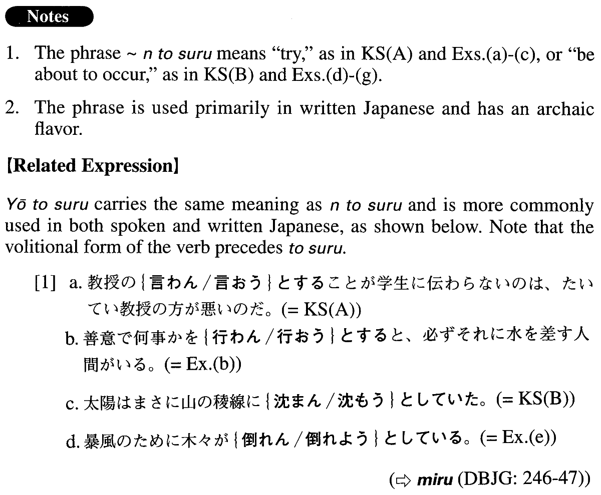

←
DoJG
→
んとする
(A. 474)
Example sentences
(ksa).
教授の言わ
んとする
ことが学生に伝わらないのは、たいてい教授の方が悪いのだ。
It is usually a professor who is to blame when his students don't comprehend what he tries to convey.
(ksb).
太陽はまさに山の稜線に沈ま
んとしていた
。
The sun was about to sink behind the mountain ridge.
(a).
あの政治家は言わ
んとしている
ところがよく分からない。
I don't comprehend what that politician is trying to say.
(b).
善意で何事かを行わ
んとする
と、必ずそれに水を差す人間がいる。
Whenever someone tries to do something with good intentions, inevitably there is someone who discourages it.
(c).
専門家でない者を排除せ
んとする
科学者の過剰防衛には辟易させられる。
I am fed up with overprotective scientists (literally: the overprotection of scientists) who try to eliminate non specialists.
(d).
死な
んとする
者は本音を吐くものだ。
A person who is about to die gives vent to his true feelings.
(e).
暴風のために木々が倒れ
んとしている
。
The trees are about to be blown over by the violent wind.
(f).
まさに輝か
んとする
月が雲で隠れた。
The moon, which was just about to shine, was concealed by the clouds.
(g).
今にも崩れ
んとする
天守閣には、城と命運をともにする城主の姿があった。
At the castle tower, which was on the verge of collapse, stood the castle lord, ready to share its fate.
Formation
Vnegative
んとする
Exception:する→せんとする
行か
んとする
Someone tries to go there
起き
んとする
Someone is about to get up
研究せ
んとする
Someone tries to do research
